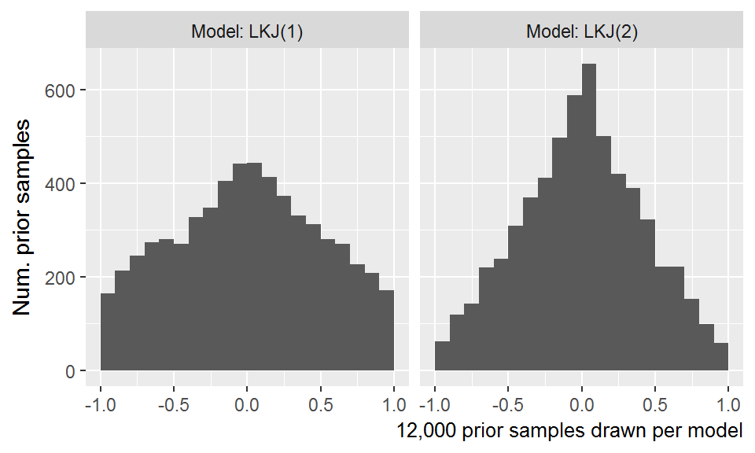

Chapter 10 Analyze familiar word recognition
Current steps:
- Model year over year changes.
- Download test scores and individual differences.
- Analyze individual differences
10.1 Maximum likelihood results
Fit a maximum likelihood model as a first pass for the analysis. We won’t fit the model automatically (whenever this page is updated). It’s too time consuming. Instead, we do it manually here, and save the results.
library(lme4)
m <- glmer(
cbind(Primary, Others) ~
(ot1 + ot2 + ot3) * Study +
(ot1 + ot2 + ot3 | ResearchID/Study),
family = binomial,
data = d_m)
readr::write_rds(m, "./data/aim1_cubic_model.rds.gz")And reload the saved model here.
library(lme4)
#> Loading required package: Matrix
m <- readr::read_rds("./data/aim1_cubic_model.rds.gz")
arm::display(m)
#> glmer(formula = cbind(Primary, Others) ~ (ot1 + ot2 + ot3) *
#> Study + (ot1 + ot2 + ot3 | ResearchID/Study), data = d_m,
#> family = binomial)
#> coef.est coef.se
#> (Intercept) -0.47 0.03
#> ot1 1.58 0.06
#> ot2 0.05 0.04
#> ot3 -0.17 0.03
#> StudyTimePoint2 0.41 0.03
#> StudyTimePoint3 0.70 0.04
#> ot1:StudyTimePoint2 0.56 0.08
#> ot1:StudyTimePoint3 1.10 0.08
#> ot2:StudyTimePoint2 -0.16 0.05
#> ot2:StudyTimePoint3 -0.35 0.05
#> ot3:StudyTimePoint2 -0.12 0.04
#> ot3:StudyTimePoint3 -0.21 0.04
#>
#> Error terms:
#> Groups Name Std.Dev. Corr
#> Study:ResearchID (Intercept) 0.30
#> ot1 0.68 0.18
#> ot2 0.44 -0.12 0.03
#> ot3 0.29 -0.09 -0.44 -0.05
#> ResearchID (Intercept) 0.27
#> ot1 0.46 0.86
#> ot2 0.09 -0.99 -0.85
#> ot3 0.03 -0.92 -0.98 0.92
#> Residual 1.00
#> ---
#> number of obs: 12584, groups: Study:ResearchID, 484; ResearchID, 195
#> AIC = 74467.3, DIC = -61745.9
#> deviance = 6328.7
d_m$cubic_fit <- fitted(m)
ggplot(d_m) +
aes(x = Time, y = cubic_fit) +
geom_line(aes(group = ResearchID), alpha = .2) +
facet_grid(. ~ Study) +
labs(
x = "Time after target onset (smoothed to 50 ms bins)",
y = "Proportion looks to target (fitted)") +
theme_grey(base_size = 9) 
10.1.1 What’s being captured by the random effects?
First, let’s plot just the fixed effect predictions.
predict_y <- function(...) predict(..., type = "response")
d_m$fixef_fit <- predict_y(m, re.form = ~ 0)
d_m$subj_fit <- predict_y(m, re.form = ~ (ot1 + ot2 + ot3 | ResearchID))
d_m$study_fit <- predict_y(m, re.form = ~ (ot1 + ot2 + ot3 | Study:ResearchID))
d_m$full_fit <- predict_y(m, re.form = ~ (ot1 + ot2 + ot3 | Study:ResearchID) +
(ot1 + ot2 + ot3 | ResearchID))
ggplot(d_m) +
aes(x = Time, y = fixef_fit) +
geom_line(aes(group = ResearchID), alpha = .2) +
facet_grid(. ~ Study) +
theme_grey(base_size = 9) +
labs(
x = "Time after target onset (smoothed to 50 ms bins)",
y = "Proportion looks to target (fitted)",
caption = "Conditioned on no random effects") 
Now, we condition on child level effects.
ggplot(d_m) +
aes(x = Time, y = subj_fit) +
geom_line(aes(group = ResearchID), alpha = .2) +
facet_grid(. ~ Study) +
theme_grey(base_size = 9) +
labs(
x = "Time after target onset (smoothed to 50 ms bins)",
y = "Proportion looks to target (fitted)",
caption = "Conditioned on Child effects") 
ggplot(d_m) +
aes(x = Time, y = subj_fit - fixef_fit) +
geom_line(aes(group = ResearchID), alpha = .2) +
facet_grid(. ~ Study) +
theme_grey(base_size = 9) +
labs(
x = "Time after target onset (smoothed to 50 ms bins)",
y = "Child-conditioned minus study means") 
It looks like the range of y values is smaller in TimePoint2 and TimePoint3, but could that just be the different numbers of participants who contribute to each study?
d_m %>%
distinct(ResearchID, Study) %>%
count(Study) %>%
rename(`Num children in model` = n) %>%
knitr::kable()| Study | Num children in model |
|---|---|
| TimePoint1 | 163 |
| TimePoint2 | 165 |
| TimePoint3 | 156 |
Now we condition on Study x Child effects. These would be capturing the subject-x-study variability.
ggplot(d_m) +
aes(x = Time, y = study_fit) +
geom_line(aes(group = ResearchID), alpha = .2) +
facet_grid(. ~ Study) +
theme_grey(base_size = 9) +
labs(
x = "Time after target onset (smoothed to 50 ms bins)",
y = "Proportion looks to target (fitted)",
caption = "Conditioned on Study x Child effects")
ggplot(d_m) +
aes(x = Time, y = study_fit - fixef_fit) +
geom_line(aes(group = ResearchID), alpha = .2) +
facet_grid(. ~ Study) +
theme_grey(base_size = 9) +
labs(
x = "Time after target onset (smoothed to 50 ms bins)",
y = "Child-x-Study-conditioned minus study means")
Look for weak spots in the time series.
d_corr <- d_m %>%
group_by(Time, Study) %>%
summarise(r = cor(Prop, cubic_fit))
ggplot(d_corr) +
aes(x = Time, y = r, color = Study) +
geom_point(shape = 1, size = 3) +
ylim(c(.8, 1)) +
labs(
x = "Time after target onset (smoothed to 50 ms bins)",
y = "Correlation of fitted and observed") +
theme_grey(base_size = 9) +
theme(
legend.position = c(0.025, 0.05),
legend.justification = c(0, 0)) 
Rank the participants by their growth curve parameters—that is, the growth curve features when conditioned on child ID.
xstudy_effects <- m %>%
ranef() %>%
getElement("ResearchID") %>%
tibble::rownames_to_column("ResearchID") %>%
as_tibble() %>%
select(ResearchID, intercept = `(Intercept)`, slope = ot1)
top_20 <- top_n(xstudy_effects, 20, slope)
bot_20 <- top_n(xstudy_effects, 20, -slope)ggplot(d_m %>% filter(Study == "TimePoint2")) +
aes(x = Time, y = subj_fit) +
geom_line(aes(group = ResearchID), alpha = .2) +
geom_line(aes(group = ResearchID),
data = semi_join(d_m, top_20) %>% filter(Study == "TimePoint2"),
size = .7, color = "#0074D9") +
geom_line(aes(group = ResearchID),
data = semi_join(d_m, bot_20) %>% filter(Study == "TimePoint2"),
size = .7, color = "#FF4136") +
theme_grey(base_size = 9) +
labs(y = "TP2 fits conditioned on Child effects",
x = "Time after target onset (smoothed to 50 ms bins)",
caption = "Colors: Top 20 and bottom 20 children by linear time effect")
#> Joining, by = "ResearchID"
#> Joining, by = "ResearchID"
Visualize the model fits for the top and bottom 20 children. This plot illustrates that the children with strongest and weakest linear time components overall stay clustered away from each other when looking study level predictions. That is, the top 20 in general perform bunch together in all three studies.
ggplot(d_m) +
aes(x = Time, y = cubic_fit) +
geom_line(aes(group = ResearchID), alpha = .2) +
geom_line(aes(group = ResearchID), data = semi_join(d_m, top_20),
size = .7, color = "#0074D9") +
geom_line(aes(group = ResearchID), data = semi_join(d_m, bot_20),
size = .7, color = "#FF4136") +
facet_grid(. ~ Study) +
theme_grey(base_size = 9) +
labs(y = "Proportion looks to target [model fits]",
x = "Time after target onset (smoothed to 50 ms bins)",
caption = "Colors: Top 20 and bottom 20 children by linear time effect")
#> Joining, by = "ResearchID"
#> Joining, by = "ResearchID"
To confirm that this differences are not just an artifact of modeling, visualize the ranks on the observed data.
ggplot(d_m) +
aes(x = Time, y = Prop) +
geom_line(aes(group = ResearchID), alpha = .2) +
geom_line(aes(group = ResearchID), data = semi_join(d_m, top_20),
size = .7, color = "#0074D9") +
geom_line(aes(group = ResearchID), data = semi_join(d_m, bot_20),
size = .7, color = "#FF4136") +
facet_grid(. ~ Study) +
labs(y = "Proportion looks to target",
x = "Time after target onset (smoothed to 50 ms bins)",
caption = "Colors: Top 20 and bottom 20 children by linear time effect")
#> Joining, by = "ResearchID"
#> Joining, by = "ResearchID"
Open questions:
- How to test for stability of individual differences over time?
- Intuitively, I would say that the differences are unstable if the red and blue lines got shuffled in each study. What stats formalize this intuition?
10.2 Bayesian model results
Here is the code used to fit the model with Stan. It took about 24 hours to run the model. The regression terms have the prior Normal(0, 1)
library(rstanarm)
options(mc.cores = parallel::detectCores())
m <- stan_glmer(
cbind(Primary, Others) ~
(ot1 + ot2 + ot3) * Study +
(ot1 + ot2 + ot3 | ResearchID/Study),
family = binomial,
prior = normal(0, 1, autoscale = FALSE),
prior_intercept = normal(0, 2),
prior_covariance = decov(2, 1, 1),
data = d_m)
readr::write_rds(m, "./data/stan_aim1_cubic_model.rds.gz")The output below contains the model quick view, a summary of the fixed effect terms, and a summary of the priors used.
b
#> stan_glmer
#> family: binomial [logit]
#> formula: cbind(Primary, Others) ~ (ot1 + ot2 + ot3) * Study + (ot1 + ot2 +
#> ot3 | ResearchID/Study)
#> ------
#>
#> Estimates:
#> Median MAD_SD
#> (Intercept) -0.5 0.0
#> ot1 1.6 0.1
#> ot2 0.0 0.0
#> ot3 -0.2 0.0
#> StudyTimePoint2 0.4 0.0
#> StudyTimePoint3 0.7 0.0
#> ot1:StudyTimePoint2 0.6 0.1
#> ot1:StudyTimePoint3 1.1 0.1
#> ot2:StudyTimePoint2 -0.2 0.0
#> ot2:StudyTimePoint3 -0.4 0.1
#> ot3:StudyTimePoint2 -0.1 0.0
#> ot3:StudyTimePoint3 -0.2 0.0
#>
#> Error terms:
#> Groups Name Std.Dev. Corr
#> Study:ResearchID (Intercept) 0.305
#> ot1 0.691 0.20
#> ot2 0.437 -0.11 0.02
#> ot3 0.294 -0.11 -0.44 -0.06
#> ResearchID (Intercept) 0.264
#> ot1 0.423 0.78
#> ot2 0.125 -0.75 -0.56
#> ot3 0.058 -0.23 -0.31 0.19
#> Num. levels: Study:ResearchID 484, ResearchID 195
#>
#> Sample avg. posterior predictive
#> distribution of y (X = xbar):
#> Median MAD_SD
#> mean_PPD 49.9 0.1
#>
#> ------
#> For info on the priors used see help('prior_summary.stanreg').
summary(b, pars = names(fixef(b)))
#>
#> Model Info:
#>
#> function: stan_glmer
#> family: binomial [logit]
#> formula: cbind(Primary, Others) ~ (ot1 + ot2 + ot3) * Study + (ot1 + ot2 +
#> ot3 | ResearchID/Study)
#> algorithm: sampling
#> priors: see help('prior_summary')
#> sample: 4000 (posterior sample size)
#> num obs: 12584
#> groups: Study:ResearchID (484), ResearchID (195)
#>
#> Estimates:
#> mean sd 2.5% 25% 50% 75% 97.5%
#> (Intercept) -0.5 0.0 -0.5 -0.5 -0.5 -0.4 -0.4
#> ot1 1.6 0.1 1.4 1.5 1.6 1.6 1.7
#> ot2 0.0 0.0 0.0 0.0 0.0 0.1 0.1
#> ot3 -0.2 0.0 -0.2 -0.2 -0.2 -0.2 -0.1
#> StudyTimePoint2 0.4 0.0 0.3 0.4 0.4 0.4 0.5
#> StudyTimePoint3 0.7 0.0 0.6 0.7 0.7 0.7 0.8
#> ot1:StudyTimePoint2 0.6 0.1 0.4 0.5 0.6 0.6 0.7
#> ot1:StudyTimePoint3 1.1 0.1 0.9 1.0 1.1 1.2 1.3
#> ot2:StudyTimePoint2 -0.2 0.1 -0.3 -0.2 -0.2 -0.1 -0.1
#> ot2:StudyTimePoint3 -0.4 0.1 -0.5 -0.4 -0.4 -0.3 -0.3
#> ot3:StudyTimePoint2 -0.1 0.0 -0.2 -0.1 -0.1 -0.1 0.0
#> ot3:StudyTimePoint3 -0.2 0.0 -0.3 -0.2 -0.2 -0.2 -0.1
#>
#> Diagnostics:
#> mcse Rhat n_eff
#> (Intercept) 0.0 1.0 1086
#> ot1 0.0 1.0 857
#> ot2 0.0 1.0 842
#> ot3 0.0 1.0 1156
#> StudyTimePoint2 0.0 1.0 1034
#> StudyTimePoint3 0.0 1.0 959
#> ot1:StudyTimePoint2 0.0 1.0 674
#> ot1:StudyTimePoint3 0.0 1.0 934
#> ot2:StudyTimePoint2 0.0 1.0 836
#> ot2:StudyTimePoint3 0.0 1.0 762
#> ot3:StudyTimePoint2 0.0 1.0 1183
#> ot3:StudyTimePoint3 0.0 1.0 1390
#>
#> For each parameter, mcse is Monte Carlo standard error, n_eff is a crude measure of effective sample size, and Rhat is the potential scale reduction factor on split chains (at convergence Rhat=1).
prior_summary(b)
#> Priors for model 'b'
#> ------
#> Intercept (after predictors centered)
#> ~ normal(location = 0, scale = 5)
#>
#> Coefficients
#> ~ normal(location = [0,0,0,...], scale = [1,1,1,...])
#> **adjusted scale = [3.33,3.33,3.33,...]
#>
#> Covariance
#> ~ decov(reg. = 2, conc. = 1, shape = 1, scale = 1)
#> ------
#> See help('prior_summary.stanreg') for more detailsWe used moderately informative priors for the effects of time and
- b ~ Normal(mean = 0, sd = 1)
When we computed the orthogonal polynomial features for Time, they were rescaled so that the linear feature ranged from −.5 to .5. Under this scaling a unit change in Time1 was equal to change from the start to the end of the analysis window. The polynomial features for the Time had the following ranges:
d_m %>%
distinct(ot1, ot2, ot3) %>%
tidyr::gather("Feature", "Value") %>%
group_by(Feature) %>%
summarise(Min = min(Value), Max = max(Value), Range = Max - Min) %>%
mutate_if(is.numeric, round, 2) %>%
mutate(Feature = stringr::str_replace(Feature, "ot(\\d)", "Time^\\1^")) %>%
knitr::kable()| Feature | Min | Max | Range |
|---|---|---|---|
| Time1 | -0.50 | 0.50 | 1.00 |
| Time2 | -0.33 | 0.60 | 0.93 |
| Time3 | -0.63 | 0.63 | 1.26 |
Under the Normal(0, 1) prior, before seeing any data, we expect 95% of plausible effects to fall in the range ±1.96, which is an adequate range for these growth curve models. For example, consider just the effect of Time1. If a listener starts at chance performance, 25% or -1.1 logits, and increases to, say, 65% or 0.62, the effect of a unit change in Time1 would be a change of 1.72 logits. This magnitude of effect is accommodated by our Normal(0, 1) prior.
For the hierarchical part of the model, I used RstanARM’s decov() prior which simultaneously sets a prior of the variances and correlations of the model’s random effect terms. For these terms, I used the default prior for the variance terms and used a weakly informative LKJ(2) prior on the random effect correlations. Under LKJ(1) supports all correlations in the range ±1, but under LKJ(2) extreme correlations are less plausible. In the figure below, we see that the LKJ(2) prior nudges some of the probability mass away from ±1 towards the center. The motivation for this kind of prior was regularization: We give the model a small amount of information to nudge it away from extreme, degenerate values.

Let’s try to understand our model by making some plots.
10.2.1 Fixed effects plots
First, let’s prepare to plot the intervals for the fixed effects.
Figure 10.1 depicts uncertainty intervals with the model’s average effects of each time-point on the growth curve features. The intercept and time effects increase each year, confirming that children get more reliable and faster at recognizing words as they grow older. For each effect, the change from year 1 to year 2 is approximately the same as the change from year 2 to year 3, as visible in figure 10.2.

Figure 10.1: Uncertainty intervals for the effects of study timepoints on growth curve features.

Figure 10.2: Uncertainty intervals for the differences between study timepoints.
Bayesplot supports transformations so we could invert the log-odds measure to see the intercepts (area under curve/average accuracy) in proportion units.
| parameter | outer | inner | ll | l | m | h | hh |
|---|---|---|---|---|---|---|---|
| plogis(Intercept~~(TP1)) | 0.9 | 0.5 | 0.372 | 0.380 | 0.385 | 0.390 | 0.397 |
| plogis(Intercept~~(TP2)) | 0.9 | 0.5 | 0.473 | 0.480 | 0.485 | 0.490 | 0.498 |
| plogis(Intercept~~(TP3)) | 0.9 | 0.5 | 0.544 | 0.551 | 0.557 | 0.562 | 0.569 |

We can compute differences in average accuracy as well.

The average accuracy was 0.385 [90% UI: 0.372–0.397] for timepoint 1, 0.485 [0.473–0.498] for timepoint 2, and 0.557 [0.544–0.569] for timepoint 3. The average accuracy increased by 0.1 [0.087–0.114] from timepoint 1 to timepoint 2 and by 0.072 [0.058–0.085] from timepoint 2 to timepoint 3. These results numerically confirm the hypothesis that children would improve in their accuracy each year over year and in their processing efficiency year over year.
10.2.2 Plot the intervals for the random effect parameters
These are the parameters governing the random effect distributions. First, we plot the standard deviations. Recall that in our hierarchical model we suppose that each growth curve is drawn from a population of related curves. The model’s fixed effects estimate the means of the distribution. These terms estimate the variability around that mean. We did not have any a priori hypotheses about the values of these scales, so do not discuss them any further.

Then the correlations.

10.2.3 Check for stable individual differences
We predicted that children would show stable individual differences such that children who are faster and more accurate at recognizing words at age 3 remain relatively faster and more accurate at age 5. To evaluate this hypothesis, we used Kendall’s W (the coefficient of correspondence or concordance). This nonparametric statistic measures the degree of agreement among J judges who are rating I items. For our purposes, the items are the 123 children who provided reliable eyetracking for all three years of the study. (That is, we excluded children who only had reliable eyetracking data for one or two years.) The judges are the sets of growth curve parameters from each year of study. For example, the intercept term provides three sets of ratings: The participants’ intercept terms from year 1 are one set of ratings and the terms from years 2 and 3 provide two more sets of ratings. These three ratings are the “judges” used to compute the intercept’s W. Thus, we compute four sets of W coefficients, one for each set of growth curve features: Intercept, Time1, Time2, and Time3.
(Maybe: Table X illustrates some sample ratings of these participants.)
| Participant ID | Growth curve feature | Year 1 | Year 2 | Year 3 |
|---|---|---|---|---|
| 640L | intercept | 0.09 (006) | 1.78 (001) | 1.53 (001) |
| 040L | intercept | 0.02 (009) | 0.31 (017) | 1.18 (002) |
| 080L | intercept | −0.02 (013) | 0.77 (005) | 1.09 (003) |
| 037L | intercept | −0.33 (052) | −0.03 (060) | 0.95 (004) |
| 043L | intercept | 0.22 (002) | 0.87 (003) | 0.94 (005) |
| 050L | intercept | −0.39 (063) | 0.45 (008) | 0.92 (006) |
| 014L | intercept | −0.06 (015) | 0.05 (047) | 0.92 (007) |
| 090L | intercept | −0.10 (019) | −0.20 (088) | 0.90 (008) |
| 106L | intercept | −0.06 (016) | 0.88 (002) | 0.86 (009) |
| 674L | intercept | −0.03 (014) | 0.21 (024) | 0.79 (010) |
Because we used a Bayesian model, we have a distribution of ratings and thus a distribution of concordance statistics. Each sample of the posterior distribution fits a growth curve for each child in each study, so each sample provides a set of ratings for concordance coefficients. The distribution of W’s lets us quantify our uncertainty because we can compute W’s for each of the 4000 samples from the posterior distribution.
One final matter is how do we assess whether a concordance statistic is meaningful. To tackle this question, we also included a “null rater”, a fake parameter that assigned each child in each year a random number. We can use the distribution of W’s generated by randomly rating children as a benchmark for assessing whether the other concordance statistics differ meaningfully from chance.
We used the kendall() function in the irr package (vers. 0.84, CITATION) to compute concordance statistics.

Figure 10.3: Uncertainty intervals for the Kendall’s coefficient of concordance. Random ratings provide a baseline of null W statistics. The intercept and linear time features are decisively non-null, indicating a significant degree of correspondence in children’s relative word recognition reliability and efficiency over three years of study.
Figure 10.3 depicts uncertainty intervals for the Kendall W’s for these growth curve features. The 90% uncertainty interval of W statistics from random ratings [0.279–0.392] subsumes the intervals for the Time2 effect [0.295–0.351] and the Time3 effect [0.276–0.348], indicating that these values do not differentiate children in a longitudinally stable way. That is, the Time2 and Time3 features differentiate children across studies as well as random numbers. Earlier, we stated that only the intercept and linear terms have psychologically meaningful interpretations and that the higher-order terms of these models serve to capture the shape of the growth curve data. These statistics support that assertion.
Concordance is strongest for the intercept term, W = 0.585 [0.573–0.596], followed by the linear time term, W = 0.501 [0.483–0.518]. Because these values are from the statistics for random ratings, we conclude that there is a credible degree of correspondence across studies when we rank children using their average accuracy (the intercept) or their growth curve slope (linear time).
10.2.4 Summary of this section
Growth curve features reflect individual differences in word recognition efficiency and accuracy. By using Kendall’s W to measure the degree of concordance among growth curve features over time, we can measure whether individual differences in lexical processing are stable over time. We found that the intercept and linear time terms were stable over time.
10.2.5 Posterior predictive checks
Bayesian models are generative; they describe how the data could have been generated. One way to evaluate the model is to have it simulate new observations. If the simulated data closely resembles the observed data, then we have some confidence that our model has learned an approximation of how the data could have been generated. Figure 10.4 depicts the density of the observed data from each year of the study versus 200 posterior simulations. Because the simulations closely track the density of the observed data, we can infer that the model has learned how to generate data from each year of the study.
![Posterior predictive density for the observed data from each year of the study. The x-axis represents the outcome measure—the proportion of looks to the target image—and the y-axis is the density of those values at year. At age 3, there is a large density of looks around chance performance (.25) with a rightward skew (above-chance looks are common). At age 4 and age 5, a bimodal distribution emerges, reflecting how looks start at chance and reliably increase to above-chance performance. Each light line is a simulation of the observed data from the model, and the thick lines are the observed data. Because the thick line is surrounded by light lines, we visually infer that the the model faithfully approximates the observed data.](12-aim1-notebook_files/figure-html/post-pred-1.png)
Figure 10.4: Posterior predictive density for the observed data from each year of the study. The x-axis represents the outcome measure—the proportion of looks to the target image—and the y-axis is the density of those values at year. At age 3, there is a large density of looks around chance performance (.25) with a rightward skew (above-chance looks are common). At age 4 and age 5, a bimodal distribution emerges, reflecting how looks start at chance and reliably increase to above-chance performance. Each light line is a simulation of the observed data from the model, and the thick lines are the observed data. Because the thick line is surrounded by light lines, we visually infer that the the model faithfully approximates the observed data.
We can ask the model make even more specific posterior predictions. Below we plot the posterior predictions for random participants. This is the model simulating new data for these participants.
set.seed(09272017)
ppred <- d_m %>%
sample_n_of(8, ResearchID) %>%
tristan::augment_posterior_predict(b, newdata = ., nsamples = 100) %>%
mutate(trials = Primary + Others)
ggplot(ppred) +
aes(x = Time, y = Prop, color = Study, group = Study) +
geom_line(aes(y = .posterior_value / trials,
group = interaction(.draw, Study)),
alpha = .20) +
geom_line(size = 1, color = "grey50") +
facet_wrap("ResearchID") +
theme(
legend.position = c(.95, 0),
legend.justification = c(1, 0),
legend.margin = margin(0)) +
guides(color = guide_legend(title = NULL, override.aes = list(alpha = 1))) +
labs(
title = "Observed means and 100 simulations of new data",
x = "Time after target onset",
y = "Proportion looks to target") 
Or we can plot the linear predictions. These are posterior predictions of the log-odds of looking to target before adding binomial noise.
lpred <- d_m %>%
sample_n_of(8, ResearchID) %>%
tristan::augment_posterior_linpred(b, newdata = ., nsamples = 100)
ggplot(lpred) +
aes(x = Time, y = .posterior_value, color = Study) +
geom_line(aes(group = interaction(Study, ResearchID, .draw)),
alpha = .1) +
facet_wrap("ResearchID") +
geom_point(aes(y = qlogis(Prop)), shape = 1) +
theme(
legend.position = c(.95, 0),
legend.justification = c(1, 0),
legend.margin = margin(0)) +
guides(color = guide_legend(title = NULL, override.aes = list(alpha = 1))) +
labs(
title = "Observed data and 100 posterior predictions",
x = "Time after target onset",
y = "Posterior log-odds")
10.2.6 Simulating data from new participants
This mixed effects model assumes that the each child’s growth curve is drawn from a distribution of related growth curves, and it tries to infer the parameters of that distribution of growth curves (like the scale of individual differences in the intercept term or the correlation among growth curve features). A natural next step is to ask the model to simulate new samples from that distribution of growth curves: That is, predict new data for a hypothetical, unobserved child drawn from the same distribution as the N CHILDREN observed children.This procedure lets us explore the range of variability in performance at each age.
Figure 10.5 shows the posterior predictions for 1,000 simulated participants, which demonstrates how the model expects new participants to improve longitudinally but also exhibit stable individual differences over time. Figure 10.6 shows uncertainty intervals for these simulations. The model has learned to predict less accurate and more variable performance at age 3 with improving accuracy and narrowing variability at age 4 and age 5.

Figure 10.5: Posterior predictions for new unobserved participants. Each line represents the predicted performance for a new participant. The three dark lines highlight predictions from one single simulated participant. The simulated participant shows both longitudinal improvement in word recognition and similar relative performance compared to other simulations each year, indicating that the model would predict new children to improve year over year and show stable individual differences over time.

Figure 10.6: Uncertainty intervals for the simulated participants. Variability is widest at age 3 and narrowest at age 5, consistent with the prediction that children become less variable as they grow older.
One of the predictions was that children would become less variable as they grew older and converge on a mature level of performance. We can tackle this question by inspecting the ranges of predictions for the simulated participants. The claim that children become less variable would imply that the range of predictions should be narrower age 5 than for age 4 than age 3. Figure 10.7 depicts the range of the predictions, both in terms of the 90 percentile range (i.e., the range of the middle 90% of the data) and in terms of the 50 percentile (interquartile) range. The ranges of performance decrease from age 3 to age 4 to age 5, consistent with the hypothesized reduction in variability.

Figure 10.7: Ranges of predictions for simulated participants over the course of a trial. The ranges are most similar during the first half of the trial when participants are at chance performance, and the ranges are most different at the end of the trial as children reliably fixate on the target image. The ranges of performance decreases with each year of the study as children show less variability.
10.2.7 Predicting the future
We predicted that individual differences in word recognition at age 3 will be more discriminating and predictive future language outcomes than differences at age 4 or age 5. To test this hypothesis, we calculated the correlations of growth curve features with year 3 expressive vocabulary size and year 2 receptive vocabulary. (The receptive test was not administered during year 3 for logistical reasons). As with the concordance statistics, we computed each of the statistics for each sample of the posterior distribution so we obtained a distribution of correlations.
Figure 10.8 shows the correlations of the intercept and linear time features with expressive vocabulary size at year 3, and Figure 10.9 shows analagous correlations for the receptive vocabulary at year 2. For both cases, the strongest correlations were found between the growth curve features at year 1. Lexical processing efficiency at year 1 correlated with year 3 vocabulary with r = .413, 90% UI [0.389–0.438], whereas the concurrent lexical processing feature at year 3 only showed a correlation of r = .283, [0.259–0.306], a difference between year 1 and year 3 of rTP1−TP3 = .13, [0.097–0.164]. For the intercept feature, the correlation for year 1, r = .391, [0.389–0.438], was probably only slightly greater than the correlation for year 2, rTP1−TP2 = .018, [-0.005–0.042] but much considerably greater than the concurrent correlation at year 3, rTP1−TP3 = .077, [0.054–0.099]. For year 2 receptive vocabulary, the correlation of year 1 intercept, r = .454, [0.437–0.47], was greater than the year 2 correlation, rTP1−TP2 = .084, [.084], and the correlation for year 1 linear time, r = .514, [0.492–0.538], was likewise greater than the year 2 correlation, rTP1−TP2 = .225, [0.192–0.257].

Figure 10.8: Uncertainty intervals for the correlations of growth curve features at each time point with expressive vocabulary (EVT2 standard scores) at year 3. The bottom rows provide intervals for the pairwise differences in correlations between time points.

Figure 10.9: Uncertainty intervals for the correlations of growth curve features at each time point with expressive vocabulary (PPVT4 standard scores) at year 2. The bottom row shows pairwise differences between the correlations at year 1 and year 2.
10.2.8 Relationship with child-level variables
Vocabulary size and lexical processing will be tightly correlated such that large year-over-year gains in one measure will predict large year-over-years gains in the other measure.